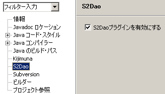
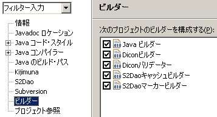

|
 |
|||||
S2DaoPluginとはS2Daoを使った開発を支援するためのEclipseプラグインです。次の機能を提供しています。
ドキュメント動作環境S2DaoPluginを使うには次の環境が必要です。
セットアップEclipseの更新サイトを提供しています。Eclipseのメニューから、「ヘルプ > ソフトウェア更新 > 検索とインストール > インストールする新規フィーチャーを検索」を選択して次のURLを追加してインストールします。 インストールが完了したら、S2Daoを使うプロジェクトのプロパティを開いて、S2Daoカテゴリから 「S2Daoプラグインを有効にする」にチェックを入れれば完了です。 うまく動かないのだけどS2DaoPluginはKijimunaの機能を利用しています。Kijimunaがインストールされており、プロジェクトのプロパティで 「Seasar プロジェクト」にチェックが入っていることを確認してください。 次に、ビルダーカテゴリを選択してビルダーの順序が下記のイメージと同じになっていることを確認してください。 それでも動かない場合はバグの可能性があります。お手数ですがバグトラッキングへ報告いただけると幸いです。 バグトラッキングJIRA更新履歴ChangeLog.txt
|
||
| Copyright© 2004-2006, The Seasar Foundation and the others. All rights reserved. |